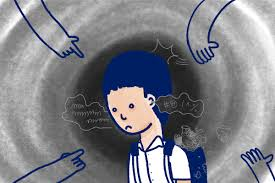

สาเหตุของการติดยาเสพติด
ทางด้านร่างกาย
การจัดหาหรือซื้อสารเสพติดด้วยตนเองเนื่องจากมีอาการเจ็บปวดทางร่างกาย
พวกรักษาตนเอง เช่นประสบอุบัติเหตุแพทย์ให้ยาระงับปวดอยู่ชั่วขณะหนึ่ง ภายหลังได้ใช้ยาโดยไม่ปรึกษาแพทย์เพื่อช่วยตนเอง เลยทำให้ติดยาโดยไม่ตั้งใจ
ทางด้านจิตใจ
พวกบุคลิกภาพผิดปกติ เช่น ต่อต้านสังคม ก้าวร้าว ชอบพึ่งพาผู้อื่น แยกตัวเองหรือซึมเศร้า
พวกที่มีความกังวลใจ หวาดกลัว หรือป่วยเป็นโรคประสาทหรือโรคจิตมีอาการนอนไม่หลับ มักใช้ยาเสพติดระงับความรู้สึกจึงทำให้ติดได้
สภาพครอบครัวแตกแยก พ่อแม่ไม่เข้าใจกัน เด็กขาดความอบอุ่น หรืออบรมเลี้ยงดูลูก ไม่ถูกต้อง หรือมีคนในครอบครัวติดสารเสพติด
ทางด้านสังคม
ถูกเพื่อนชวน อยากลอง
อยู่ในสภาพแวดล้อมที่ใกล้ชิดกับพวกติดสารเสพติด
ความกดดันทางสังคม เช่น มีปัญหาทางเศรษฐกิจ ไม่มีงานทำ
โทษของการติดยาเสพติด
โทษต่อร่างกายและจิตใจ
ทำลายประสาทสมอง จิตใจเสื่อม ซึมเศร้า กังวล เลื่อนลอย และเป็นโรคจิตจากพิษยานั้นๆ
เสียบุคลิกภาพ ขาดความสนใจตนเอง ขาดสติสัมปชัญญะ
ร่างกายซูบซีด อ่อนเพลีย
พิษยาทำลายอวัยวะต่างๆให้เสื่อมลง มีโรคแทรกได้ง่าย
ประสบอุบัติเหตุได้ง่าย เพราะการควบคุมทางกล้ามเนื้อและระบบประสาทบกพร่อง
โทษต่อครอบครัว
